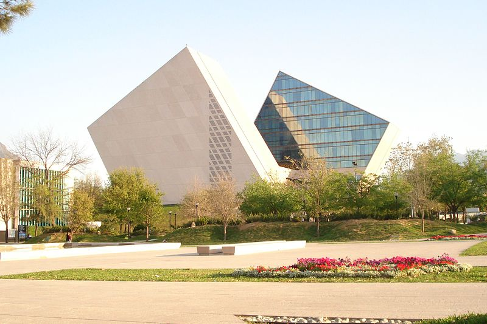
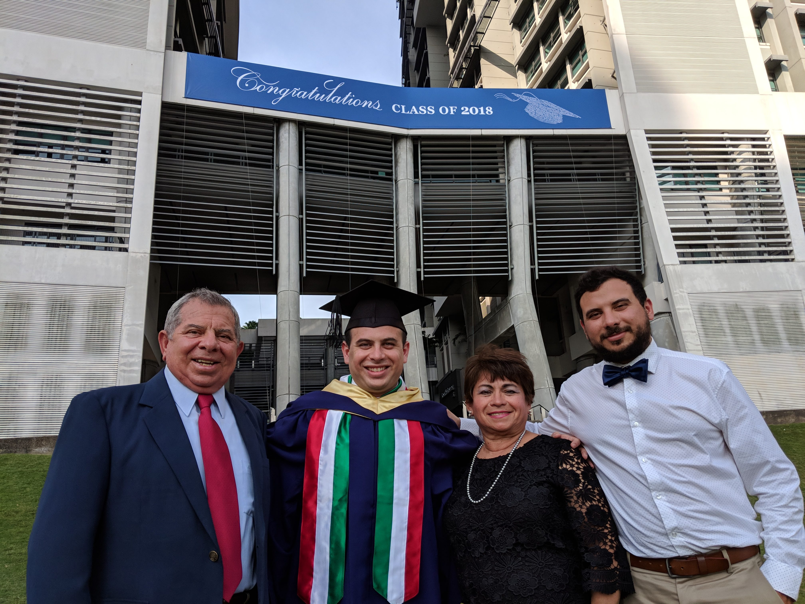
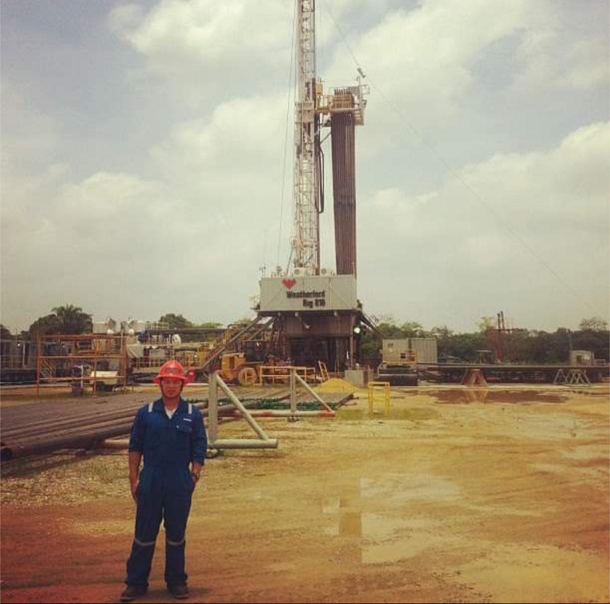
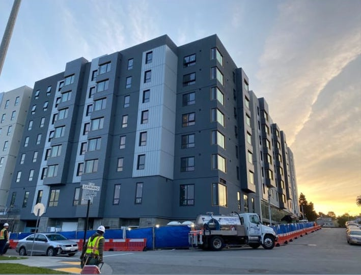

My Academic Background is mainly engineering (Math & Physics) with an undergraduate degree of Civil Engineering from
ITESM (Monterrey Institute of Technology) at Monterrey, Mexico. During my undergraduate career, there was the opportunity
for experiences abroad at UNCC (University of North Carolina at Charlotte) in the United States & NTU (Nanyang Technological
University) in Singapore. Also, a graduate experience of 6 months studying Earthquake Engineering at TODAI (The University
of Tokyo) in Japan & a graduate degree of MSc. Offshore Technology at NUS (National University of Singapore) in Singapore.
After some Work Experience in the Construction Industry (2018-2020), I came back to studies on November 2020, by taking
online courses for Software Engineering on my own (Python, Machine Learning, JS Data Structures & Algorithms). Then, I took
a Full-Stack Web & Mobile App Development Bootcamp of 6 months consisting in: HTML, CSS, JS, Bootstrap, React Web, React
Native & Back-end [NodeJS, Mongodb, Express].
During 2021, I have been deeply involved in the crypto ecosystem in different aspects. I started my journey by taking an
online course called "Blockchain: The New Industrial Revolution 2021" from Udemy. I have read a lot of information
from blockchain, there are many new concepts in the industry, such as: protocols, chains, DAOs, layer2, liquidity
provider, impermanent loss, DApps, etc., that are required to understand better this new industry. Web3 is part of
this new industrial revolution and it has attracted my attention a lot.
On 2023 - 2024, I took an online bootcamp coursework in Back-End Programming with Java & Spring from OpenClassrooms, a recognized online training educational establishment, declared as such by the French authority 'le rectorat de l'Académie de Paris'.
On 2026, I started getting certified for AI Anthropic Courses at https://anthropic.skilljar.com/. I also started using Claude Code AI for my personal projects and work related activities.
My Work Experience, by 2026, consists in 2 internships and 4 full-time jobs listed in chronological order:
During my undergraduate degree (2013), I did a 2-months summer internship with Schlumberger (oil & gas company) in Villahermosa,
TAB, Mexico and I learned how cementing jobs, at jobsite, are done to stabilize the pipes under earth at high-pressures & high-temperatures.
After I got my undergraduate degree (2015), I worked as a Construction Site Supervisor with Arch Saul Gonzalez in 4 High-Class Residential projects in Monterrey, NL, Mexico.
During my graduate studies (2018), I did an internship with Intecsea (oil & gas company) at Singapore and I participated
in the structural calculations of a LNG Gas Plant located in Hong Kong.
After I finished my graduate school (2018), I worked in the Construction Industry with two general contractors in San
Francisco, CA, US with Build Group & Guzman Construction Group for 2 and a half years and I learned the different stages
that involved a construction project. I participated in a total of 4 projects in Pre-Construction & Operations; projects
were buildings from 3 to 13 storeys from Post-Tension Concrete (valued on ~98M-130M USD) & Wooden Structure (valued on ~16M-20M USD).
My overall conclusion of this construction experience is that building projects from drawings to real life, can be extremely
fun if you see the big project as a finished puzzle, and you segment all the small details in small pieces of that big puzzle.
From 2022 - 2025, I worked in JPMorgan & Chase in Chicago, IL, US as a Software Engineer. During this 3 years experience, I got hands-on programming using Java with the SpringBoot Framework, Maven, JUnit, Sonar, Raven, Fortify, Jules & Jenkins (CI/CD), Terraform, AWS Cloud, Bitbucket, etc. Migration from PaaS (Platform-as-a-Service) to IaaS (Infrastructure-as-a-Service), AWS Cloud Certifications and Hybrid setup with Control-M and AWS were some of the work performed during my time in JPMC.
Nowadays, I'm pursuing a remote or hybrid full-time job in a company in Tokyo/Chiba (Japan), US West Coast in CA/OR/WA (USA) or a freelancer career in the tech and/or blockchain industry as a Developer. I'm interested in working to create systems or marketplaces that can facilitate an income to most of the people in the world. AI era has changed the way jobs are, and I would like to contribute in helping during the general work industry update. I feel passion
in learning new things and acquiring new technical skills. My drive is to see the final product in the most optimum way by taking every single
small detail in account. I like to inspire others by demonstrating that nothing is impossible if you focus on the goal and work for that vision
little by little.




As Santino's product manager at JPMorganChase, I had the privilege of working closely with him during his time as a software engineer on my team. Throughout our collaboration, Santino impressed me with his remarkable ability to learn quickly and consistently deliver high-quality work on time. His curiosity set him apart—he regularly asked insightful questions that deepened his understanding of both the technical and business context of our work, enabling him to align his contributions with broader business objectives and corporate strategies. Within our engineering team, Santino worked exceptionally well with colleagues, building strong relationships and fostering a positive, collaborative atmosphere. He approached his work with a clear awareness of how engineering decisions supported business outcomes, and his contributions helped advance team goals that were directly connected to organizational priorities. Both leadership and the team trusted him to deliver reliable, high-impact solutions, and he consistently met or exceeded expectations. He was well-liked, generous with his time, and prioritized the team's success over his individual duties. It was truly a pleasure to know and work with Santino at JPMorganChase. I am confident that he will bring the same dedication, technical skill, and ability to connect his work to meaningful business results and strategic initiatives in any future role.
Senior Product Manager at JPMorganChase (2025)Santino was a breath of fresh air on a project with some contentious team dynamics- always offering help and looking for ways to advance solutions to problems whenever they arose. From my perspective as a client rep, I could tell that he values people, relationships, and getting the work done efficiently. If he saw inefficiencies, he would call it out and look for ways to resolve. He has a positive attitude and integrity- I could trust that he had the best interests of the project at heart. I enjoyed working with Santino and wish him great success in his future endeavours.
Project Manager- Architecture / Program Manager at BCCI Construction (2020)It is my pleasure to recommend Santino Cervera. As an architectural designer, I worked with Santino (as GCG construction consultant) in the past year, dealing with RFIs and on-site issues. He is a very responsible person. Every time I need onsite measurements or other onsite response, he can quickly give me feedback. It is helpful, especially in the COVID-19 SIP period. He has a wide knowledge of construction, it helps when we communicate. He also comes up with good ideas when we have OAC meetings. If you have any questions about Santino's experience and abilities with me, I am glad to further discuss why I believe he is a good choice for this opportunity.
Architectural Designer at RG Architecture (2020)As a co-worker to Santino Cervera, he demonstrated hard work and professionalism great.
Compliance Manager at Guzman Construction Group, Inc. (2020)I just wanted to drop you a quick note and thank you for all the hard work you’ve put into our development. The project is in fantastic shape and you’ve been a key member of the team getting us to this point. I’m sad to see you go and wish you luck on your next and future assignments. I’d be glad to have you on another ACC deal.
Vice President at American Campus Communities (2019)Rodrigo is very hard worker person, intelligent, good engineering judgment, detailed, with a good personality.
General Superintendent at Build Group (2019)Having worked with Rodrigo Santino on a project for a little over 7 months, his open communication, organizational skills, work ethic, dedication and great attention to detail is highly valued and appreciated. He's a great team player and I can only hope to be able to work with him again in the future.
Senior Associate at Gould Evans (2019)Hard worker, analytic and always willing to make the right things.
Project Manager at Build Group (2019)